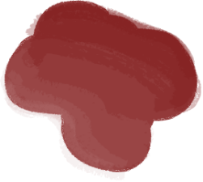
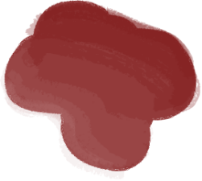
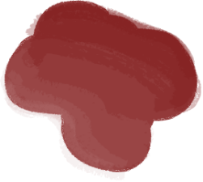

Hoe Is Alles Begonnen?
Alles is begonnen met de professor. Hij ondervond dat steeds minder mensen boeken lazen en schreven. Hij wilde hier iets aandoen. Hij startte zijn eigen maatschappij waar taal centraal staat!
 

De stad waar alles rond taal draait
Alles is begonnen met de professor. Hij ondervond dat steeds minder mensen boeken lazen en schreven. Hij wilde hier iets aandoen. Hij startte zijn eigen maatschappij waar taal centraal staat!

Zoals elke gemeenschap zijn er regels. Deze regels zijn er om de bevolking zoveel mogelijk te motiveren om zich volledig te storten op taal.
Regels zoals “schrijvers moeten elke maand een boek schrijven” en “taalfouten zijn illegaal” helpen hier alleen maar in.

Dit is Het Boek, Het is een Heilig boek. Hierin staan alle regels en alle woorden van Langolation
Van jongs af aan word je opgeleid om schrijver te worden.
Daarbij hoort je eerste pen.
Dit is de enigste die je krijgt, als je deze verliest dan zullen er grote gevolgen zijn.
Al van de kleuterklas krijg je lessen om letters correct te schrijven en lessen over de spellingsregels.
Als je 14 jaar bent, word je voor de eerste keer getest. Je moet dan je eerste boek schrijven. Wanneer hij voltooid is gaat deze naar de professor.
Hij leest je boek en als hij het fantastisch vindt, wordt je een schrijver. Echter als het niet volstaat word je een niet-schrijver.
Als inwoner moet je geloven in De Boom deze boom heeft zwarte bladeren. Dit komt doordat de professor de boom geen water maar inkt gaf. Dit is trouwens de eerste boom die de professor plantte toen hij de maatschappij opstartte.
Dit zijn inktzakje die aan de boom groeien als appels.
“Een dag niet schrijven is als een dag zonder water, het is niet gezond”
-De professor
Heb je de taal al wat te pakken?
Wacht niet
langer,
maak de test en kijk of jij geschikt bent voor Langolation.